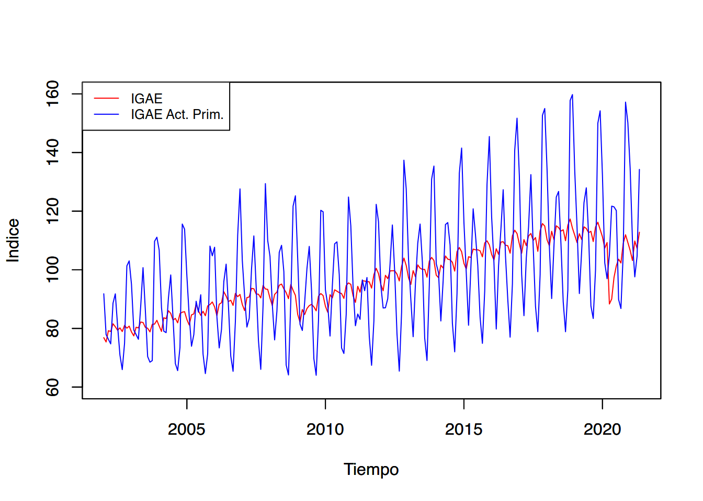
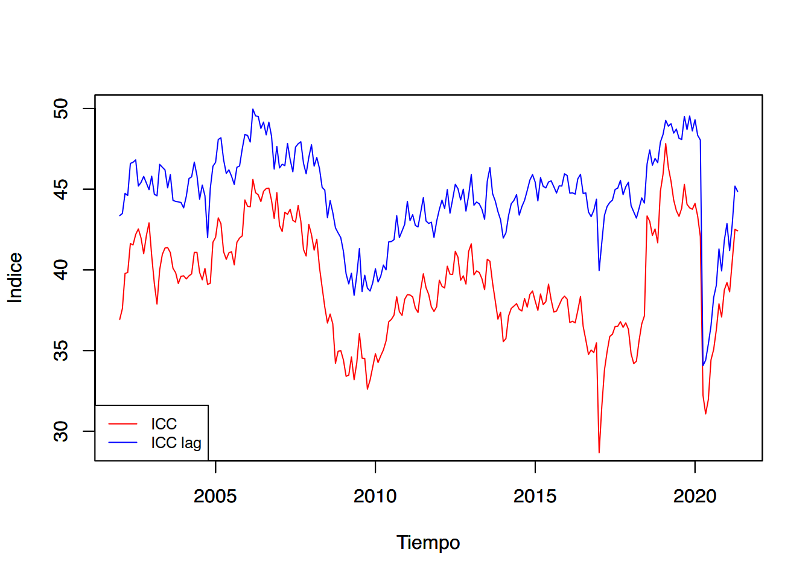
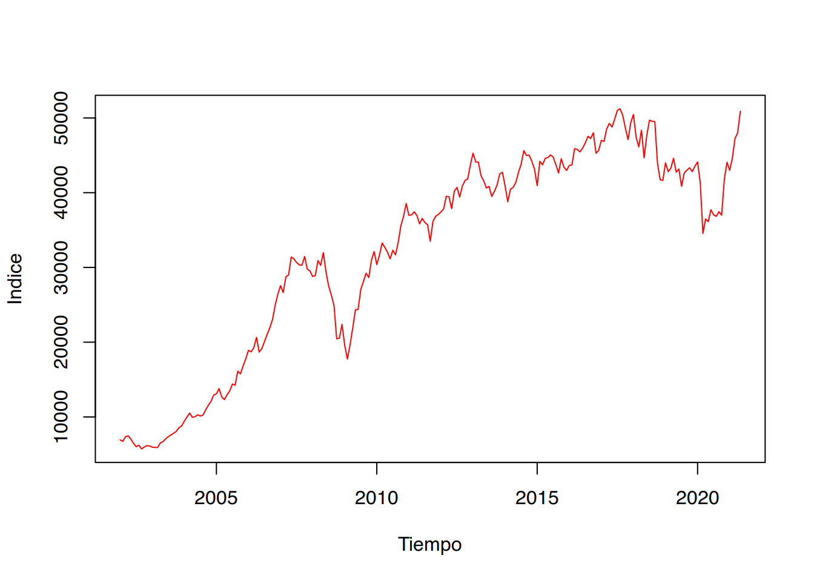
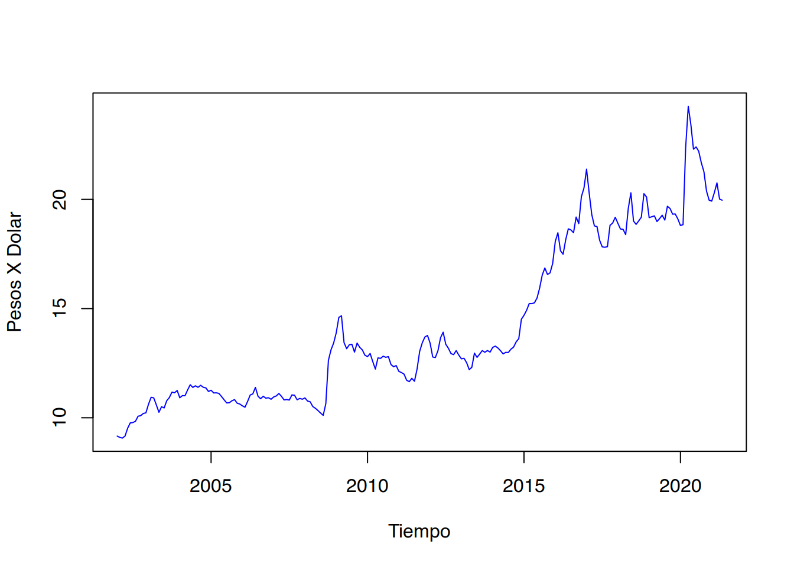
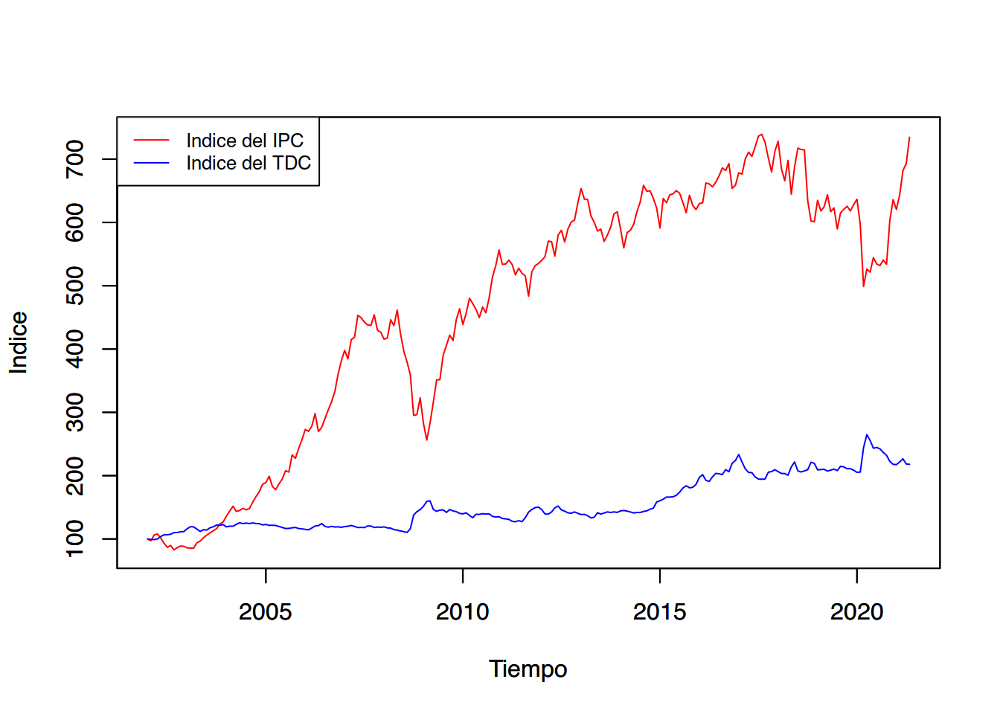
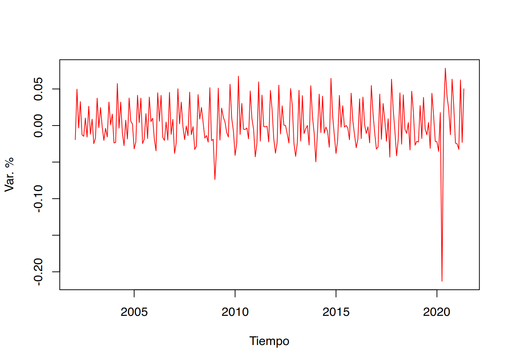
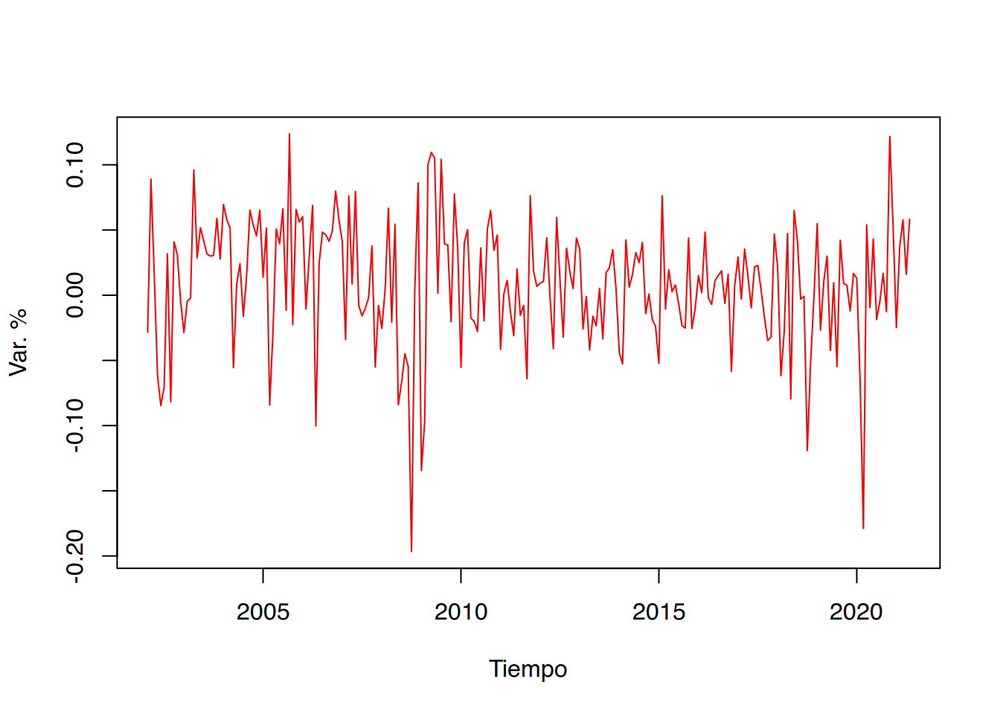
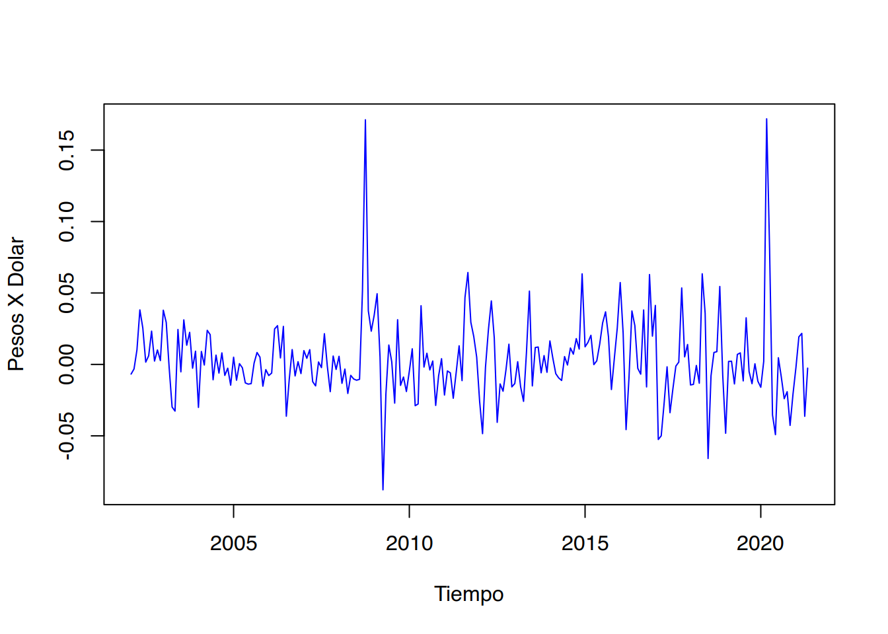

Descubre cómo seleccionar hardware, descargar la imagen ISO y preparar los medios de instalación. Exploraremos opciones para probar o instalar Linux en tu equipo.
Informática
Tecnología
Sistemas Operativos
Linux
Únete a esta emocionante serie de introducción a Linux, donde te guiaré a través de los pasos para descargar e instalar GNU/Linux en tu equipo. Aprenderás a seleccionar el hardware adecuado, descargar la imagen ISO de tu distribución preferida y preparar los medios de instalación. Además, exploraremos diferentes opciones para probar o instalar Linux. ¡Embárcate en esta aventura y descubre el poder de GNU/Linux!
Estas notas son un resumen, una síntesis comparativa y, en algunos casos, una interpretación propia de los libros de texto de Cowpertwait y Metcalfe (2009), Guerrero-Guzmán (2014), Enders (2015), Franses y van Dijk (2003), Kirchgassner, Wolters, y Hassler (2012), Lutkepohl (2005), Wei (2019), entre otros. En algunos casos se incorpora información adicional para efectos de dar contexto al tema analizado (ver sección de Bibliografía para mayores detalles).
El objetivo de este documento es proporcionar un conjunto de apuntes que sirva de apoyo para la clase, por ello no deben considerarse como notas exhaustivas o como un sustituto de la clase y los laboratorios. Asimismo, es deseable que los alumnos puedan aportar sus observaciones y correcciones a estas notas, las observaciones a estas notas son esperadas y siempre serán bienvenidas y agradecidas.
En estas notas se estudian los temas que típicamente son incluidos como parte de un curso estándar de análisis de series de tiempo y agrega otros tantos, los cuales son:
Modelos no estacionarios univariados y Pruebas de raíz unitaria (o pruebas para determinar que una serie es estacionaria);
Modelos multivariados, entre lo que se incluye a los Vectores Autoregresivos (VAR) y los procedimientos de Cointegración
Modelación de series univariadas con errores con heterocedasticidad y autocorrelación: ARCH(r), GARCH(n), etc.;
Modelos multivariados con errores con heterocedasticidad y autocorrelación: M-GARCH y M-GARCH-M;
Casos particulares en los que las series incluidas en un modelo multivariado no son del mismo orden de integración, conocidos como modelos ADL.
Modelos de Datos Panel en series de tiempo, y
Modelos no lineales como los de cambios de régimen.
a) La naturaleza de los datos de Series de Tiempo
El análisis de series de tiempo tiene muchas aplicaciones en diversos campos de la ciencia. Por ejemplo, en la economía continuamente se está expuesto a observaciones de los mercados financieros, indicadores de empleo, índices o indicadores del nivel de producción, índices de precios, etc. En otros campos de las ciencias sociales se emplea el análisis de series de tiempo para analizar la evolución de la población, los nacimientos, o el número de personas con matriculas escolares. Finalmente, en las ciencias exactas se pueden encontrar casos como los de un epidemiólogo que puede estar interesado en el número de casos de influenza observados en algún periodo de tiempo dado y si a estos se les puede asociar con algún tipo de estacionalidad o si se trata del inicio de un fenómeno atípico.
La primera aproximación que se suele tener a las series de tiempo es mediante el exámen de datos puestos en una gráfica, en la cual uno de los ejes es el tiempo y el otro es el valor tomado por la variable. No obstante, en este tipo de exámenes existen dos enfoques. Por un lado, existe el efoque de la importancia del tiempo, el cual consiste en reconocer cómo lo que sucede hoy es afectado por lo que pasó ayer o, en general, en periodos pasados, o cómo lo que pasa hoy afectará los eventos futuros. Por otro lado, existe el enfoque del análisis frecuentista o de frecuencia, mediante el cual se busca reconocer la importancia que tiene para los investigadores los ciclos (estacionales, de crisis económicas, etc.)
Código
library(readxl)Base_1 <-read_excel("base 1 timeseries.xlsx")IGAE_2013 <-ts(Base_1$IGAE_2013, start =2002, freq =12)IGAE_PRIM_2013 <-ts(Base_1$IGAE_PRIM_2013, start =2002, freq =12)ICC <-ts(Base_1$ICC, start =2002, freq =12)ICC_LAG <-ts(Base_1$ICC_LAG, start =2002, freq =12)IPC_BMV <-ts(Base_1$IPC_BMV, start =2002, freq =12)TDC <-ts(Base_1$TDC, start =2002, freq =12)plot(IGAE_2013, type ="l", lwd =1, col ="red", ylab ="Indice", xlab ="Tiempo", ylim =c(60,160))par(new = T)# Indicador Global de la Actividad Econ?mica, Actividades Primarias, base 2008plot(IGAE_PRIM_2013, type ="l", lwd =1, col ="blue", ylab ="Indice", xlab ="Tiempo", ylim =c(60,160))# Leyendalegend("topleft", c("IGAE","IGAE Act. Prim."), cex =0.8, lty =1:1, col =c("red", "blue"))par(new = F)
Figura 1: Indicador Global de Actividad Económica (IGAE) Global y para las Actividades Primarias (2008=100), Ene.2002 - May.2021

b) Ejemplos y aplicaciones de las Series de Tiempo
Un primer ejemplo que puede ilustrar la presencia de los dos tipos de enfoques antes mencionadas es la Figura Figura 1. En esta figura se muestra la evolución del Indicador Global de la Actividad Económica (IGAE) en su versión global o del total de la economía y en su versión únicamente para las actividades primarias entre enero de 2002 y mayo de 2021.
Como se puede observar, el IGAE del total de la economía muestra, principalmente, que el enfoque del tiempo es más relevante. Es decir, que existe cierta persistencia en el indicador, lo que significa que la economía crece en razón del crecimiento reportado en periodos pasados. No obstante, lo que no podemos reconocer es que los eventos futuros tienen un efecto en el desempeño de la economía hoy día. Así, no es común observar cambios abruptos del indicador, salvo por la crisis global de 2008 y la reciente crisis causada por la Covid-19.
Código
plot(ICC, type ="l", lwd =1, col ="red", ylab ="Indice", xlab ="Tiempo", ylim =c(29, 50))# Comando que indica a R que sin borrar la grafica anterior, grafique la siguiente.par(new = T)# Indice ??Como considera usted la situacion economica del pais hoy en dia comparada con la de hace 12 meses?, base enero 2003plot(ICC_LAG, type ="l", lwd =1, col ="blue", ylab ="Indice", xlab ="Tiempo", ylim =c(29,50))# Leyendalegend("bottomleft", c("ICC","ICC lag"), cex =0.8, lty =1:1, col =c("red", "blue"))par(new = F)
Figura 2: índice de Confianza del Consumidor (ICC): General y resultado de ¿Cómo considera usted la situación economica del país hoy en día comparada con la de hace 12 meses? (puntos), Ene.2002-may.2021

Por el contrario, el IGAE de las actividades primarias muestra una presencia significativa de la importancia de la frecuencia. No pasa desapercibido que existen muchos ciclos en la evolución del indicador. Algo que suena común en las actividades primarias, cuya producción depende de eventos que son ciclícos agrícolas asociados con el clima u otros factores determinantes de la oferta de productos agrícolas. Otro factor que puede incluir en el indicador son elementos de demanda, más que los de oferta. Por ejemplo, el consumo de alimentos típicos de algunas temporadas del año.
Como segundo ejemplo, en la Figura Figura 2 se ilustra la evolución reciente del índice de Confianza del Consumidor (ICC) en dos de sus versiones: i) el Índice global y ii) el Índice de confianza de los consumidores cuando estos consideran la situación actual en la economía en relación el año anterior.
Destacamos que el ICC mide las expectativas de los consumidores en razón de la información pasada y de la esperada, segun dichos consumidores.
Código
# Indice de Precios y Cotizaciones de la Bolsa Mexicana de Valoresplot(IPC_BMV, type ="l", lwd =1, col ="red", ylab ="Indice", xlab ="Tiempo")# Tipo de Cambio para Solventar Obligaciones en Moneda Extranjeraplot(TDC, type ="l", lwd =1, col ="blue", ylab ="Pesos X Dolar", xlab ="Tiempo")
Figura 3: índice de Precios y Cotizaciones de la Bolsa Mexicana de Valores (Panel Derecho) y Tipo de Cambio para Solventar Obligaciones en Moneda Extranjera, pesos por dólar (Panel izquierdo), Ene.2002-May.2021
(a) Indice de Precios y Cotizaciones BMV

(b) Tipo de Cambio

Así, es probable que las dos series de tiempo exhiban un gran peso para los eventos pasados, pero a la vez, un componente -probablemente menor- del componente de frecuencia. Esto último en razón de que los consumidores suelen considerar en sus expectativas de consumo los periodos cíclicos de la economía: temporadas navideñas, pagos de colegiaturas, etc. Este segundo ejemplo también ilustra que la confianza del consumidor no necesariamente está directamente correlacionada con el desempeño de la economía.
Como tercer ejemplo se muestra la evolución de dos series. La Figura Figura 3 ilustra el comportamiento reciente de dos indicadores que son referencia para los inversionistas. Por un lado, se ubica el índice de Precios y Cotizaciones de la BMV (IPC), el cuál refleja el valor de las acciones de empresas que cotizan en la BMV y el volumen de acciones comercializadas, en conjunto. De esta forma, se ha interpretado que el IPC refleja el rendimiento del capital promedio invertido en las empresas que cotizan en la BMV.
Por otro lado, en la Figura Figura 3 se presenta la evolución del Tipo de Cambio (TDC){indicador financiero que se suele utilizar como medio de reserva de valor. Esto, en razón de que el TDC es conocido como un instrumento que en momentos de crisis toma valores contraciclicos de la economía mexicana. No obstante, ambos indicadores no son comparables. Para hacerlos comparbles en la Figura Figura 4 se presentan en versión índice con una base en el primer mes de la muestra.
Código
IPC_BMV_I <-100*IPC_BMV/IPC_BMV[1]TDC_I <-100*TDC/TDC[1]# Indice del indice de Precios y Cotizaciones de la Bolsa Mexicana de Valoresplot(IPC_BMV_I, type ="l", lwd =1, col ="red", ylab ="Indice", xlab ="Tiempo", ylim =c(80,740))# Comando que indica a R que sin borrar la grafica anterior, grafique la siguiente.par(new = T)# Indice del Tipo de Cambio para Solventar Obligaciones en Moneda Extranjeraplot(TDC_I, type ="l", lwd =1, col ="blue", ylab ="Indice", xlab ="Tiempo", ylim =c(80,740))# Leyendalegend("topleft", c("Indice del IPC","Indice del TDC"), cex =0.8, lty =1:1, col =c("red", "blue"))par(new = F)
Figura 4: Índice del índice de Precios y Cotizaciones de la Bolsa Mexicana de Valores (Panel Derecho) e Índice del Tipo de Cambio para Solventar Obligaciones en Moneda Extranjera (ambos enero de 2002 = 100), pesos por dólar (Panel izquierdo), Ene.2002-May.2021

En la perspectiva de la Figura Figura 4 se puede apreciar que el TDC no es tan rentable, ya que una inversión en la BMV mediante el IPC, en el largo plazo, muestra más redimientos. Asimismo, la Figura Figura 4) ilustra que en ambas series se observa un dominio de la condición de tiempo y no uno de frecuencia. Es decir, tanto el IPC como el TDC no responden a condiciones como ciclos o temporadas que si son observables en actividades económicas como las primarias.
Finalmente, la Figura Figura 5 ilustra un característica que también resulta de gran interés en el análisis de series de tiempo: los datos de alta frecuencia y de comportamiento no regular. Como se puede observar, en la Figura Figura 5 se muestran las diferencias logarítmicas de las series de IGAE de la actividad total, el IPC y el TDC.
Código
# Indicador Global de la Actividad Econimica, base 2008plot(diff(log(IGAE_2013), lag =1), type ="l", lwd =1, col ="red", ylab ="Var. %", xlab ="Tiempo")# Indice de Precios y Cotizaciones de la Bolsa Mexicana de Valoresplot(diff(log(IPC_BMV), lag =1), type ="l", lwd =1, col ="red", ylab ="Var. %", xlab ="Tiempo")# Tipo de Cambio para Solventar Obligaciones en Moneda Extranjeraplot(diff(log(TDC), lag =1), type ="l", lwd =1, col ="blue", ylab ="Pesos X Dolar", xlab ="Tiempo")
Figura 5: Tasas de Crecimiento mensuales (diferencias logarítmicas) de Indicador Global de la Actividad Económica, Índice de Precios y Cotizaciones de la Bolsa Mexicana de Valores (Panel Derecho) y Tipo de Cambio para Solventar Obligaciones en Moneda Extranjera, Ene.2002-May.2021
(a) Indicador Global de la Actividad Economica

(b) Indice de Precios y Cotizaciones BMV

(c) Tipo de Cambio

Dichas diferencia se pueden interpretar como una tasa de crecimiento de las series por las siguientes razones. Consideremos una serie de tiempo dada por \(y_t\), cuya versión logarítmica es \(ln(y_t)\). De esta forma, la diferencia logarítmica esta dada por la ecuación (Ecuación 1):
Ahora bien, si retomamos la definición de tasa de crecimiento (TC) de una serie de tiempo \(y_t\) entre el periodo \(t\) y \(t-1\) podemos obtener que:
La ecuación (Ecuación 3) es cierta cuando los valores de \(y_t\) y \(y_{t-1}\) son muy parecidos, es decir, cuando las variaciones no son tan abruptas. Otra forma de interpretar la ecuación (Ecuación 3) es que para tasas de crecimiento pequeñas, se puede utilizar como una buena aproximación a la diferencia logarítmica mostrada en la ecuación (Ecuación 1).
En la Figura Figura 5 se reportan las diferencias logarítmicas del IGAE, IPC y TDC, todos, como una media de distitntos tipos de redimientos. Es decir, podemos decir que un capitalista promedio (suponiendo que solo puede invertir en la actividad económica, en la bolsa o en el dólar), puede observar que le es más redituable en función de sus preferencias.
Notése que la dinámica de las variaciones de cada una de las series es significativamente diferente. Destaca que el TDC es una de las variables que, en general, no muestra grandes cambios a lo largo del tiempo. No obstante, se han observado cambios radicales, cuando menos en el año 2008. Lo anterior, son características que se han observado para el IPC. En cambio, el IGAE muestra un comportamiento más estable o estacionario.
@online{achalma2023,
author = {Achalma, Edison},
title = {Notas de Clase Series de Tiempo},
date = {2023-08-27},
url = {https://achalmaedison.netlify.app//docs/blog/econometria/2023-08-03-series-de-tiempo-00-inicio},
langid = {es}
}
![]()